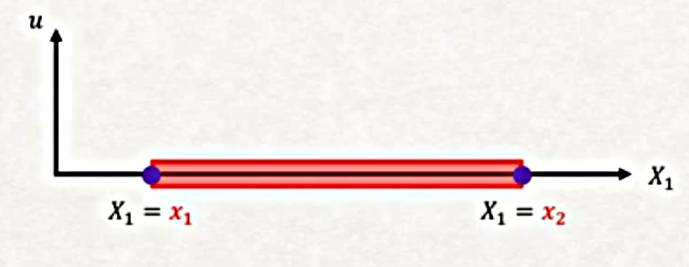
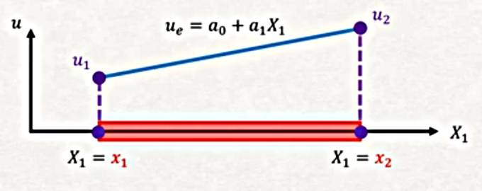

Izgara Denklemleri
Yapısal mekanikte ızgara yüklerin dik uygulandığı bir sistemdir. Izgaranın öğelerinin katı (rigid) şekilde bağlandığı farz edilir, yani ögelerin birbirine bağlandığındaki açılar aynı kalır. Düğüm noktalarında bürümsal ve bükülme momentleri süreklilik gösterir. İzgara örnekleri bir evin tabanı (floor) ya da bir köprünün alt yüzeyi olabilir [3, sf. 262].

Ama izgara denklemlerine detaylı giriş yapmadan önce Galerkin, ve şekil fonksiyonları (shape function) konusuna bakalım.
Alttaki gibi bir denklem düşünelim,
$$ E I \frac{\mathrm{d}^4 y}{\mathrm{d} X_1^4} = q \qquad (1) $$
Biraz düzenleme sonrası
$$ E I \frac{\mathrm{d}^4 y}{\mathrm{d} X_1^4} - q = 0 $$
elde ederim. Amacım öyle bir yaklaşık $y$, ya da $y_{approx}$ diyelim, bulmak ki üstteki denklemi çözebileyim. Bunu $y$ yerine onu yaklaşık temsil edebilen bir diğer fonksiyonu geçirerek yapabilirim. Bir polinom bu işi görebilir; Pek çok diğer yöntemin kullandığı tipik bir polinom vardır,
$$ y_{approx} = a_0 + a_1 X_1 + a_2 X_1^2 $$
diye gider, aslında daha genel olarak olan her terimde "bir katsayı çarpı $X_1$'in bir tür fonksiyonu" gibi bir toplam kullanmak daha iyi olabilir, bu formda,
$$ y_{approx} = a_0 \phi_0(X_1) + a_1 \phi_1(X_1) + a_2 \phi_2(X_1) $$
Daha kısa olarak
$$ y_{approx} = \sum_{i=0}^{n} a_i \phi_i(X) $$
Dikkat $\phi_i(X)$ içinde $X$ var bu $X = X_1,X_2,..,X_n$ anlamında, cebirsel olarak her $\phi$ fonksiyonuna $X$ geçildiğini düşünebiliriz ama her $\phi_i$ tüm $X$ öğelerini kullanmayabilir; üstteki polinom örneğinde mesela $\phi_1$ fonksiyonu sadece $X_1$'i kullanarak bir hesap yapar, diğerleri diğer şekillerde.
Not, $y_{approx}$ gerekli (essential) sınır şartlarını yerine getirmelidir.
Şekil Fonksiyonları (Shape Functions)
Diyelim ki bir çubuğa bakıyorum ve onun üzerinde iki tane düğüm tanımladım, düğümlerden biri $X_1 = x_1$ noktasında diğeri $X_2 = x_2$ noktasında.

Ve yine diyelim ki bu iki düğümdeki yer değişimi $u_i$ değerlerini biliyorum, eldeki örnek için $u_1$ ve $u_2$, kabaca alttaki gibi olsun,

Şekle gelelim; eğer bu iki düğüm üzerinden bir lineer bağlantı kullanmak istiyorsam yani iki düğüm arasında aradeğerleme yapacak fonksiyon lineer olsun diyorsam, yapılacak olan bariz aslında,

Aradeğerleme $u_e$ bu şekilde. Peki o fonksiyonda bilinmeyen $a_0,a_1$ nasıl bulunacak? Biz nihai sonuç olarak bu katsayılarla ilgilenmiyoruz, bizi tek ilgilendiren yer değişim fonksiyonu, bunu belirtmiştik. O zaman üstteki fonksiyonu $u_1,u_2$ temelli olarak tekrar yazabilir miyiz acaba? Eğer $x_1$ noktasında fonksiyon değeri $u_1$, $x_2$ noktasında $u_2$ ise,
$$ u(x_1) = a_0 + a_1 x_1 = u_1 $$
$$ u(x_2) = a_0 + a_1 x_2 = u_2 $$
İki bilinmeyen var, iki denklem var, çözüm [1, Ders 2]
$$ a_0 = \frac{u_2 x_1 - u_1 x_2}{L}, \qquad a_1 = \frac{u_2 - u_1}{L} $$
$L$ kırmızı ile gösterilen parçanın uzunluğu sadece, yani $x_2 - x_1$.
Üstteki $a_0,a_1$ değerlerini nasıl bulduğumuzu merak edenler için
$$ u(x_1) = a_0 + a_1 x_1 = u_1, \quad u(x_2) = a_0 + a_1 x_2 = u_2 $$
ile başlarız, ikinci formülden birinciyi çıkartırsak,
$$ (x_2 - x_1) a_1 = u_2 - u_1 \to a_1 = \frac{u_2 - u_1}{L} $$
ki $L = x_2 - x_1$
$a_0$'i bulmak için birinci formüldeki $a_1$'i alıp, yani $a_1 = \frac{u_1 - a_0}{x_1}$, ikinciye sokuyoruz,
$$ a_0 + \frac{\frac{u_1 - a_0}{x_1}}{x_1} x_2 = u_2 $$
$$ x_1 a_0 + u_1 x_2 - a_0 x_2 = u_2 x_2 $$
$$ u_1 x_2 - u_2x_1 = -a_0 x_1 + a_0 x_2 $$
$$ = a_0 (x_2 - x_1) = a_0 L $$
$$ a_0 = \frac{u_1 x_2 - u_1 x_2}{L} $$
Devam edelim.
$a_0,a_1$ degerlerini $u_e$ icine koyunca,
$$ u = \frac{u_2 x_1 - u_1 x_2}{L} - \frac{u_2 - u_1}{L} X_1 $$
Biraz daha cebirsel değiştirme sonrası
$$ u = \frac{(x_2 - X_1)}{L} u_1 + \frac{(X_1 - x_1)}{L} u_2 $$
Bu son değişimi yaptık çünkü bu formda dikkat edersek denklem daha önce gördüğümüz Galerkin deneme fonksiyonlarına benziyor,
$$ u = u_1 \phi_1(X_1) + u_2 \phi_2 (X_1) $$
kalıbında görüldüğü gibi. Deneme fonksiyonlarında $u_1,u_2$ sabit değerlerdi, bu bölümde gördüğümüz $u_i$ değerleri de öyle aslında. Bilinen $u_i$ değerlerini yaklaşık temsile uğraşıyoruz, gerçi çözüm mekaniği içinde o $u$ değerleri de hesaplanıyor fakat bu belli formülasyonlar için onların bilindiği farzedilebilir.
Şimdi $\phi_1,\phi_2$ fonksiyonları bizim önceden seçtiğimiz fonksiyonlardı, polinom seçtiğimizde $X_1,X_1^2$ gibi hesaplar kullandık. Üstteki türetim sonrası $N_1,N_2$ var, ve ulaştığımız fonksiyonlar
$$ N_1 = \frac{(x_2 - X_1)}{L}, \quad N_2 = \frac{(X_1 - x_1)}{L} $$
Bu şekil fonksiyonları neye benziyor acaba? Alttaki gibi,

Bu iki fonksiyonu üst üste koyduğumuzda (superimpose) yani topladığımızda, sonucun mavi çizgiyi aynen vereceğini görebilirdik.
İlginç bir diğer özellik, eğer mesela $N_2$'ye tek başına bakarsam, onun ilk düğümde 0 değerinde, ikinci düğümde 1 değerinde olduğunu görebiliriz. Eğer $N_3$ olsa bu şekil de birinci ve ikinci düğümde sıfır olurdu. Diğer yandan her şekil fonksiyonu ait olduğu düğümde 1 değerindedir. $N_1$ birinci düğümde 1 değerinde, $N_2$ ikinci düğümde 1 değerinde, vs. Bu şekil fonksiyonları öyle tasarlanmıştır.
Fakat üstteki türetimden daha basit olanı iki noktadaki farkı uzunluğa bölmek, ve $x$ ile çarpıp başlangıç değerine eklemek. Mesela alttaki çubuğu düşünelim [3, sf. 264],

Eger bir $\phi'$ acisi 1 noktasinda $\phi'_{1x}$ 2 noktasinda $\phi'_{2x}$ olsun istiyorsak ve aradaki degisim lineer ise,
$$ \phi' = \left( \frac{\phi'_{2x} - \phi'_{1x}}{L} \right) x' + \phi'_{1x} $$
Eğer şekil fonksiyonu $N_1,N_2$ kullanmak istersek ki her iki fonksiyon sırasıyla $x'$'in birer fonksiyonu, yani
$$ \phi' = N_1 \phi'_{1x} + N_2 \phi'_{2x} $$
olacak şekilde, o zaman
$$ N_1 = 1 - \frac{x'}{L}, \quad N_2 = \frac{x'}{L} $$
ile bunu yapabilirdik. Matris formunda
$$ \phi' = [\begin{array}{cc} N_1 & N_2 \end{array}] \left[\begin{array}{c} \phi'_{1x} \\ \phi'_{2x} \end{array}\right] $$
[devam edecek]
Kaynaklar
[1] Petitt, Finite Element Method Theory, University of Alberta, https://www.youtube.com/watch?v=2iUnfPRk6Ro&list=PLLSzlda_AXa3yQEJAb5JcmsVDy9i9K_fi
[2] Bayramli, Fizik, Materyel Mekanigi 7
[3] Logan, A First Course in the Finite Element Method, 6th Ed
Yukarı